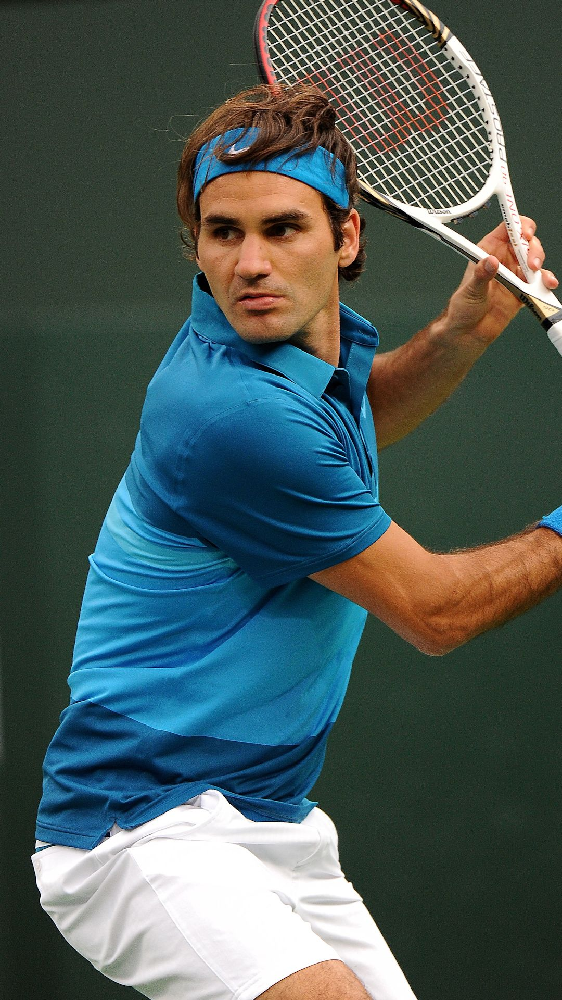
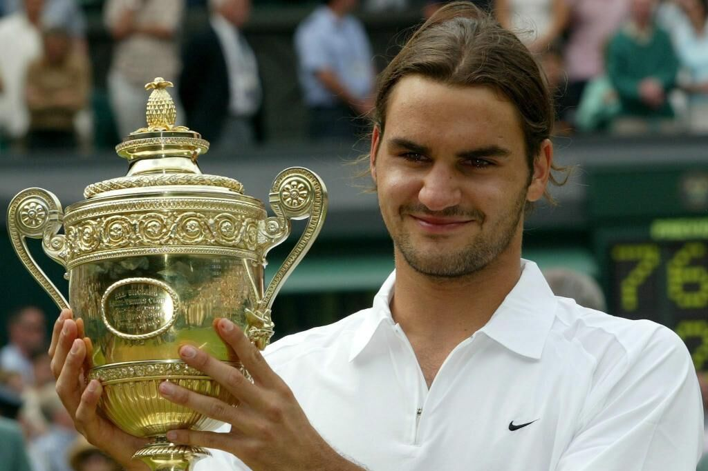
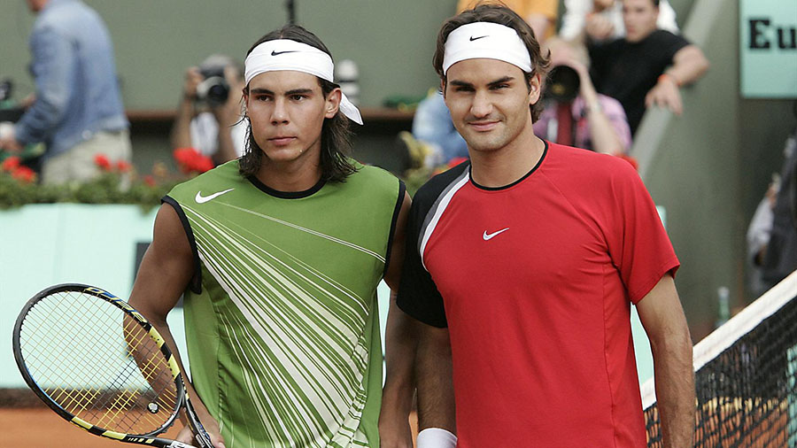
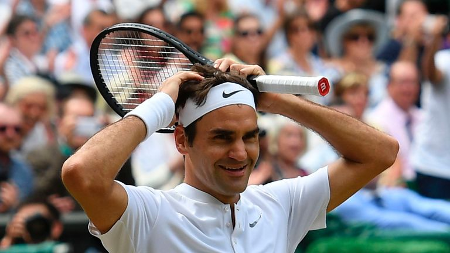
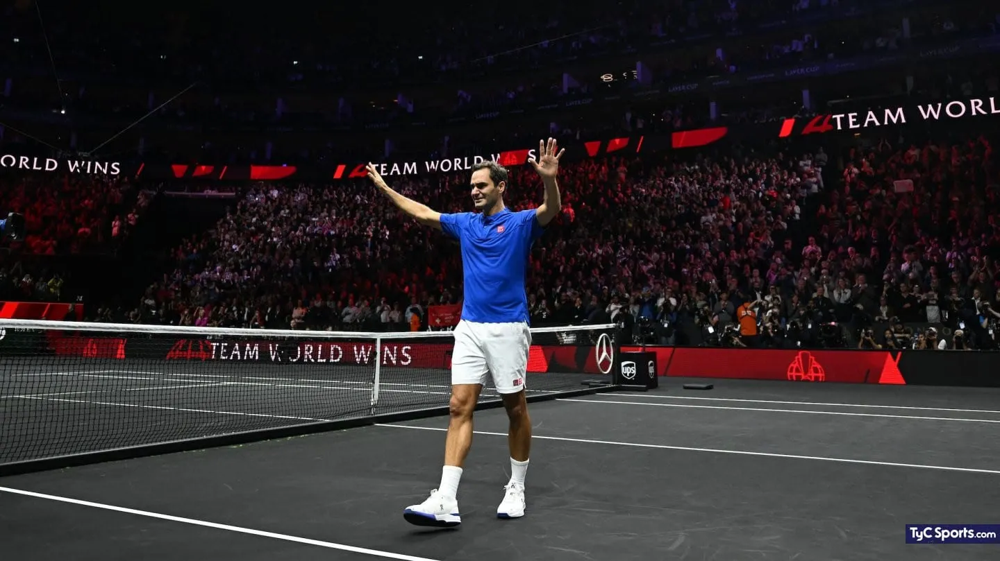

Roger Federer
"Su Majestad"
I. El Nacimiento de un Genio (1998-2003)

Roger Federer irrumpió en el circuito con un talento natural que parecía venir de otra época. Tras un inicio marcado por un carácter temperamental, el suizo encontró su centro en 2001, cuando derrotó al legendario Pete Sampras en la catedral de Wimbledon, marcando un cambio de guardia histórico.
En 2003, Roger cumplió la profecía al ganar su primer Wimbledon. Con su melena larga y un juego de pies que parecía ballet sobre el césped, Federer demostró que se podía dominar el tenis con pura elegancia técnica. Fue el inicio de una era donde el mundo del deporte se rendiría ante el estilo más perfecto jamás visto en una raqueta.
II. La Edad de Oro y el Duelo Eterno (2004-2010)

Entre 2004 y 2007, Federer alcanzó un nivel de perfección estadística aterrador. Ganó 11 de los 16 Grand Slams disputados en ese periodo y se mantuvo como Número 1 del mundo durante 237 semanas consecutivas, un récord que aún parece inalcanzable. Roger no solo ganaba; destruía a sus rivales con una facilidad pasmosa.
En esta etapa nació la rivalidad más grande de la historia contra Rafael Nadal. En 2008, protagonizaron la "Final de los Tiempos" en Wimbledon, un duelo bajo el ocaso que cambió el tenis para siempre. En 2009, Federer finalmente conquistó Roland Garros, completando el Grand Slam de carrera y superando el récord de 14 grandes de Sampras.
III. El Renacer del Maestro (2011-2018)

Cuando muchos analistas daban por terminada su carrera tras el ascenso de Djokovic y las lesiones, Federer se reinventó. Cambió su raqueta por una de aro más grande y volvió a la red con más agresividad. Tras seis meses fuera por una cirugía de rodilla, regresó en el Australian Open 2017 para ganar el título más emotivo de su vida ante Nadal.
En esta etapa, Roger alcanzó los 20 Grand Slams y volvió a ser el Número 1 más veterano de la historia a los 36 años. Su revés a una mano se convirtió en un arma letal renovada, demostrando que el "Maestro" nunca dejó de aprender y evolucionar.
IV. El Último Adiós (2019-2022)

Roger Federer se despidió del tenis profesional en la Laver Cup de 2022, en una imagen que dio la vuelta al mundo: llorando de la mano con su mayor rival y amigo, Rafa Nadal. Se retiró con 103 títulos ATP y el respeto unánime de todos los continentes.
Más allá de los números, su legado es haber convertido el tenis en arte. Roger no fue solo un jugador, fue el embajador que llevó el deporte a nuevas fronteras de elegancia y respeto. Como dijo una vez un poeta: "Ver a Federer jugar es una experiencia religiosa".